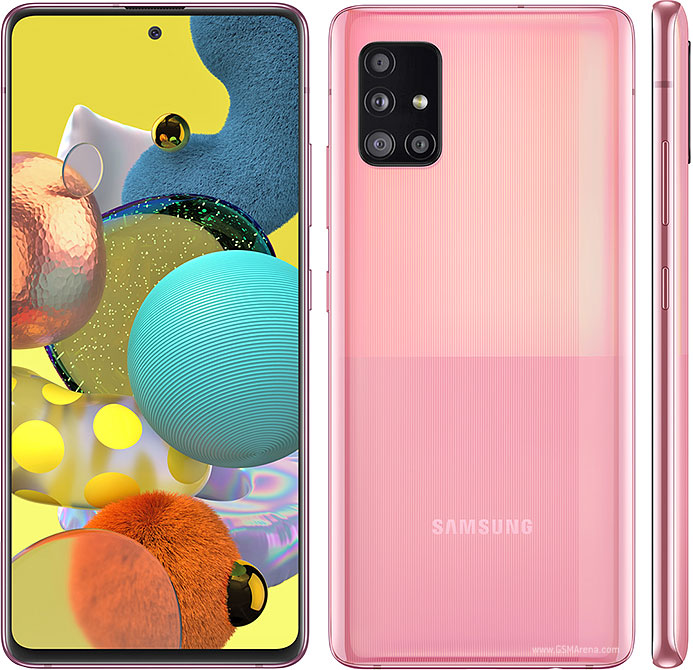
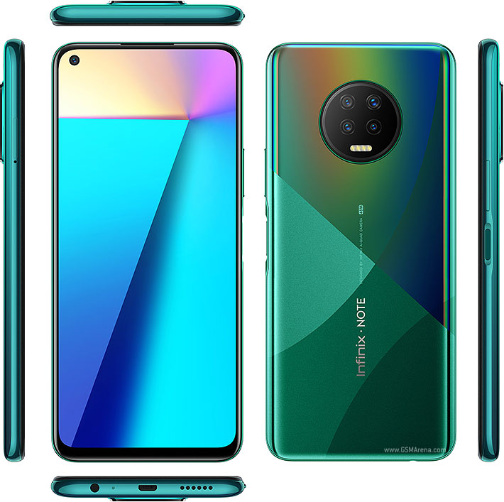
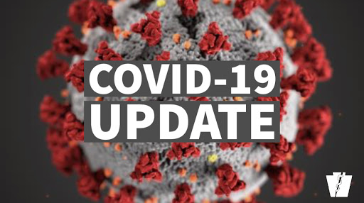

Best Selling Smartphone 2020
Galaxy A51 was Samsung’s best-selling smartphone in Q1 2020

The Galaxy A51 was unveiled alongside the Galaxy A71 in December of last year. Since then, both mid-range smartphones have been selling well. According to a new report from market research firm Canalys, the Galaxy A51 was the best-selling Samsung smartphone in the world during Q1 2020.
The report estimates that Samsung sold around 6 million units of the Galaxy A51 in the first quarter of this year.
The smartphone was also the third best-selling smartphone in the world, after the iPhone 11 (18 million) and the Xiaomi Redmi Note 8/8T (8 million). The South Korean smartphone giant had four devices in the list of world’s top 10 best-selling smartphones during the quarter: Galaxy A51, Galaxy A10s, Galaxy A20s, and Galaxy A01. Learn More Click
posted by KyleWest on 16 June 2020
Best Samsung Phone 2020
The Galaxy S20 Ultra is the culmination of years of iteration and improvement. Samsung has been sticking with this general design language since the Galaxy S6, but it feels like it might have finally perfected it. The S20 Ultra is incredibly well-built, and its massive footprint allows it to squeeze in top-of-the-line specs, 5G support, and a massive 5,000mAh battery.
It also has the best display we've ever seen on a phone: an enormous 6.9-inch Dynamic AMOLED panel with a 120Hz refresh rate and 240Hz touch sampling. It has plenty of other great hardware features, too, including microSD expansion, water resistance, and bilateral wireless charging. It runs Samsung's most mature One UI software yet, and it's buttery smooth thanks to the Snapdragon 865 chipset.
Of course, we can't talk about a Samsung phone without mentioning the cameras. The S20 Ultra goes all out with a 108MP primary camera, featuring a sensor 3x larger than that of the preceding Galaxy S10 series and 9:1 pixel binning for extra-sharp and bright 12MP photos. You also get an ultra-wide camera and a new periscope-style telephoto camera that lets you reach all the way up to 100x zoom.
There's also 8K video recording, complete with editing tools built into the gallery, and a new Single Take shooting mode that captures multiple different types of photos and videos all at the press of a button. Learn More Click
posted by KyleWest on 16 June 2020
Latest Infinix NOTE 7

lunched april 2020
Infinix Note 7 smartphone runs on Android v10 (Q) operating system. The phone is powered by Octa core (2 GHz, Dual core, Cortex A75 + 1.7 GHz, Hexa Core, Cortex A55) processor. It runs on the MediaTek Helio G70 Chipset. It has 6 GB RAM and 128 GB internal storage.
Infinix Note 7 smartphone has a IPS LCD display. It measures 173.4 mm x 79 mm x 8.75 mm and weighs . The screen has a resolution of 720 x 1640 pixels and 258 ppi pixel density. On camera front, the buyers get a 16 MP Primary Camera and on the rear, there's an 48MP + 2MP + 2MP camera with features like Fixed Focus. It is backed by a 5000 mAh battery. Connectivity features in the smartphone include WiFi, Bluetooth, GPS, Volte, and more. Learn More Click
posted by KyleWest on 16 June 2020
Important Notice!!!
Covid-19 Update

Please note, it's getting really windy and cold nowadays. The heat and sun did protect us a lot from the Corona Virus Spread because the virus didn't thrive well at high temperature, but now the temperature is going low we have to be more careful.
We are entering the natural catarrh, cough and sore throat season ( due to rain and cold weather ). So, let's drink lots of lime ( either in tea or in warm water ), ginger, garlic and pepper soups with our hot local spices. We should also note that our immunity can drop during raining season due to catarrh, cough and sore throat. So using the suggested natural herbal drinks and hot spices will help to boost our immunity against COVID-19 and other cold symptoms.
And observe ways of preventing covid-19 spread.
Please endeavour to stay safe..
posted by KyleWest on 18 June 2020